Discovering
what fits you well.

Find where it’s breaking beneath the surface and pinpointing where ownership slips & decisions stall.
Role and decision confusion is costly & I bring clarity so everyone knows what they own & how to move forward.
Build structures that enable confident decisions and delivery.
Change only works if it sticks. I build habits & decisions that keep things moving long after.
Everything shared within a session is held in complete confidence. This is a space built on trust and that trust is non-negotiable.

For founders and senior leaders who need a thinking partner who wants structured, direct, and built around your specific business reality.
A longer arc of work for those who want lasting change & not just a better month. Structured sessions, accountability check-ins, and direct interventions that go to the root.

For organisations navigating growth, transitions, or repeated leadership breakdowns. Practical, structured, and grounded in how people actually behave & not how they’re supposed to.
Designed for leadership teams that need to get aligned fast. A working session that leaves your team with more clarity than they walked in with.

Start here. A focused conversation to identify where ownership, decisions, or leadership are quietly breaking down in your business at no cost.
For conferences and leadership summits looking for a speaker who brings substance over inspiration.
A focused, high-impact session built for leadership teams, founders, or offsites.

I bring a grounded, direct perspective to panels—particularly on leadership, founder dependency, and why conversations between owners often miss the real problem.
Yes. Completely. What is discussed in a session stays in the session. The only exceptions are the standard ethical and legal obligations applicable to all psychological practice.
If you're asking that question, you probably are. The clarity call exists precisely for this—to figure out together whether this is the right fit and right time.
Before we begin, you'll know exactly what the work involves, the structure of the process, boundaries, and what progress looks like.
This work is not a substitute for clinical therapy or psychiatric care. If at any point that is what's needed, I will say so directly and help you find the right resource.
This is structured advisory work. We don't dig into your past or process emotions. We look at how you're currently thinking, deciding, and operating.

